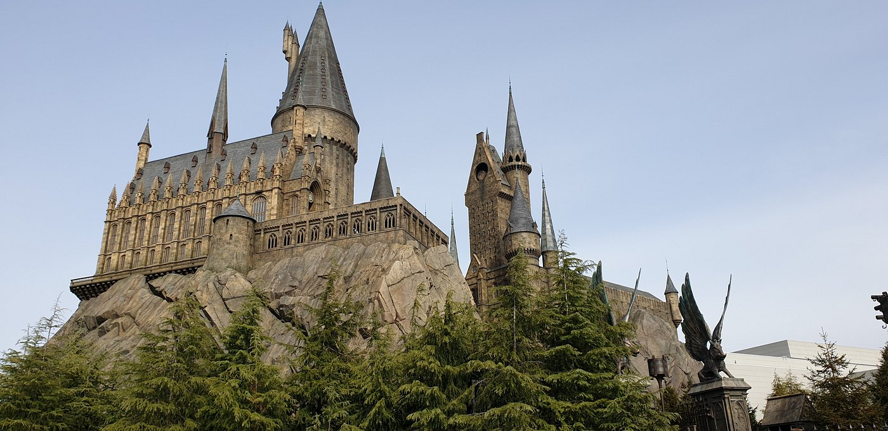
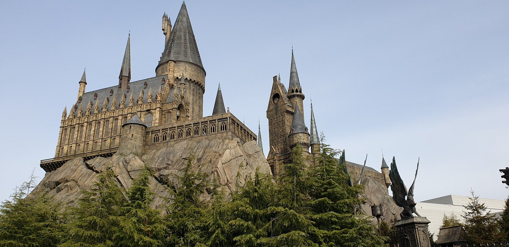

Travel 먹거리.즐길거리 가득한
먹거리.즐길거리 가득한
위너비 여행지 오사카
우리가 느끼는 여행의 즐거움에는 여러 가지가 있다. 아름다운 자연경관이나 화려한 도심의 풍경. 유명한 먹거리와 쇼핑의 천국 등... 하지만 한 곳의 여행지에서 이 모든 즐거움을 느끼기란 좀처럼 쉽지 않다. 수많은 일본의 여행지 중에서 앞선 조건들을 모두 만족시킬 수 있는 여행지를 하나만 꼽으라면 단어컨대 '오사카' 를 꼽을 것이다. '먹다가 망한다'라는 말이 있을 정도로 다양한 음식들로 넘쳐나고 거리에서 거리로 이어지는 쇼핑아케이드, 도시 곳곳에 위치한 놀이시설까지 먹고 놀고 즐기는데 부족함이 없는 관광 천국이 바로 오사카다.
오사카성

일본 최초의 통일 군주 도요토미 히데요시의 요새 같은 성
죽기 전에 봐야할 세계 역사유적 중 하나로도 꼽히는 오사카성은 간사이 지방 여행자라면 응당 들러야할 곳이다. 임진왜란을 일으킨 장본인 도요토미 히데요시가 누린 부귀영화의 상징이자 오사카라는 도시의 심벌이기도 한 오사카성은 특히 벚꽃이 만개한 봄철에 가장 아름다운 자태를 과시하는 장소. 화사한 벚꽃 엔딩을 경험하고 싶다면 일정을 여유롭게 잡아 천천히 요모조모 뜯어보는 게 좋다.
도톤보리


오사카 남쪽에 흐르는 도톤보리 강 주변에 형성된 유흥가다. 강을 따라 에비스바시부터 센니치마에도리까지 500m 가량 이어져 있다. 오사카를 상징하는 대표적인 거리로 하루 종일 맛있는 냄새가 가득한 먹자골목이자, 오락실과 극장이 가득한 환락가다. 저렴한 술집과 포장마차가 즐비하며, 우리나라에도 잘 알려진 타코야키가 일본에서 가장 맛있는 곳으로 유명하다. 최신 유행 패션이 주를 이루는 거리지만 볼거리, 먹을거리, 즐길거리가 가득하여 관광객이 끊이지 않는다. 특히 다양하고 특이한 간판과 네온사인 등이 앞다투어 눈길을 사로잡는다.
유니버셜 스튜디오 재팬
 


해리포터 빌리지
할리우드 영화를 테마로 54만m2 부지 면적에(공원 면적 39만m2) 조성한 테마파크로, 아시아에서는 최초로 지어진 유니버설 계열의 테마 파크이다. 2001년 봄에 오픈하여 일본의 대표적인 테마파크로 자리 잡았다. 할리우드의 유명 감독인 스티븐 스필버그가 참여하여 공원을 더욱 실감나는 영화 속 장소로 바꿔놓았다. 할리우드, 뉴욕, 주라기 파크, 워터월드, 샌프란시스코 등 영화를 몸으로 체험할 수 있는 여러 테마 지역으로 구성되며, 스릴 넘치는 놀이기구와 화려한 쇼로 가득 채워져 있다.
가이유칸

방문자 수와 면적, 실내 수조의 규모를 기준으로 일본 내 3위권에 드는 오사카 최대 수족관이다. 실내 수조의 규모는 전 세계적으로도 다섯 손가락안에 들어가는 아쿠아리움. 환태평양 지역에 서식하는 620여 종, 3만여 개체의 생물이 15개 수족관에 전시되고 있으며, 테마별로 직접 보고 체험할 수 있도록 꾸며졌다. 8층부터 4층까지 지상에서 해저로 내려간다는 콘셉트로 수족관을 구성하고 있으며 관람객은 마치 태평양의 바다를 순회하는 것처럼 다양한 환경의 바다 생물을 만나볼 수 있다. 고래상어가 유유히 헤엄쳐 다니는 세계 최대급 '태평양' 수조와 수중터널 아쿠아게이트, 형형색색의 해파리를 구경할 수 있는 해파리관 등이 특히 인기!
우메다 스카이 빌딩


오사카를 통틀어 가장 미래지향적 건축물이다. 40층의 고층 빌딩 두 동이 나란히 솟아 있으며 상층부가 서로 연결되어 있는 모양은 마치 미래도시의 빌딩을 보는 듯하다. 날씨가 맑은 날에는 파란 하늘이 빌딩의 창에 비쳐 더욱 신비로운 분위기를 자아낸다. 빌딩 꼭대기에 위치한 야외 전망대인 ‘공중정원 전망대’에서 감상하는 오사카의 스카이라인이 인상적이다. 전망대로는 엘리베이터와 에스컬레이터를 타고 이동할 수 있는데, 독특한 구조의 에스컬레이터를 타면 하늘을 떠가는 듯한 체험을 할 수 있다.
신세카이